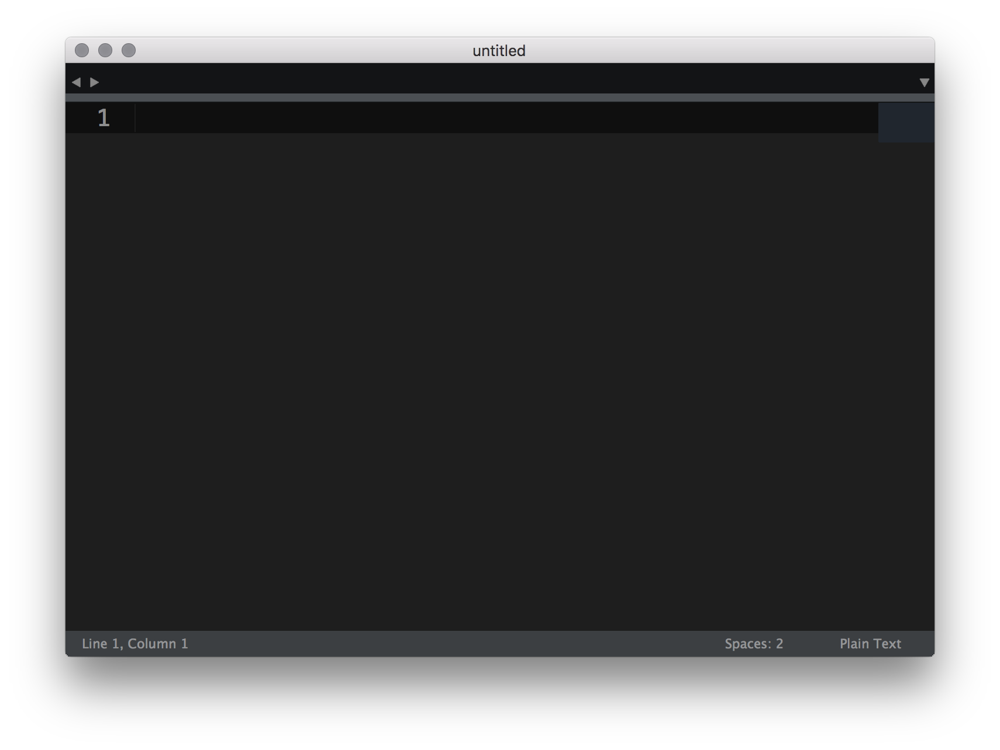

Sublime Text 3
Improve your workflow
by David García / @d4vecarter
What is Sublime?
Code Editor
not an IDE
Opening Sublime
- Icon
- Drag Folder
- .sublime-project
- Terminal
Interface
- Window
- Tabs
- Minimap
- Sidebar
- Status bar
Preferences
Sublime Preferences GistSublime Text Selection/Edition
Multiple Word/Line Selection/Edition
Cmd + d -- Select word
Cmd + l -- Select line
Sublime Text Selection/Edition
Text duplication & re-arrange line
Cmd + Shift + d -- Duplicate line
Ctrl + Cmd + Up/Down -- Re arrange line order
Sublime Text Selection/Edition
Expand selection to Scope
Cmd + Shift + Space
Sublime Text Selection/Edition
Selection to indentation
Cmd + Shift + j
Sublime Text Find/Replace
Finding words
Cmd + g -- Quick Find a world / Goto Next word
Cmd + Shift + g -- Goto Previous word
Ctrl + Cmd + g -- Find all words
Sublime Text Find/Replace
Find tool
Cmd + f -- Open Find a word
Alt - Cmd + f -- Open Find and replace
Cmd + Shift + f -- Find in files
Sublime Native Tools
Instant search
Cmd + p
Sublime Native Tools
Set syntax
Cmd + Shift + p --- ssyn
Sublime Native Tools
Indentation
Cmd + Shift + p --- re
Sublime Native Tools
Convert Upper/Lower case
Cmd + Shift + p --- low
Sublime Native Tools
Value Bumping
Ctrl + Up/Down --- +/- 1 unit
Alt + Cmd + Up/Down --- +/- 1 unit
Alt + Up/Down --- +/- .1 unit
Sublime Native Tools
Go to line/column
Ctrl + g --- 250 // Goto line 250
Ctrl + g --- 250:10 // Goto line 250 Column 10
Sublime Native Tools
Tag wrapping
Ctrl + Shift + w -- adds a wrapping HTML tag
Sublime Native Tools
Multi cursor
Ctrl + Shift + Up/Down arrows
Cmd + Left Click
Sublime Native Tools
Split views
Columns: Alt + Cmd + 1 - 5
Rows: Alt + Cmd + Shift + 2 - 3
Sublime Native Tools
Tab switching
Crtl + Tab -- Next tab
Crtl + Shift + Tab -- Prev tab
Cmd + 1 to number of opened tabs
Sublime Native Tools
Distraction free mode
Crtl + Cmd + Shift + f
Cmd + k + b -- Open/close Sidebar in DF view
Cmd + 1 - tab number to change window
Plugins
- Emmet
- HTML Boilerplate
- JavaScript Next
- Git
- SublimeLinter
- SublimeLinter-contrib-eslint
- SublimeLinter-contrib-scss
- Color Highlighter
- SideBarEnhancements
Themes
- >Soda
- Cobalt 2
¡Gracias!

- Frontend developer en Schibsted Spain.
- Profesor en Master de Diseño Web de Bau.
- Profesor en Escuela-IT.
Twitter - @d4vecarter
GitHub - davecarter
LinkedIn - David García